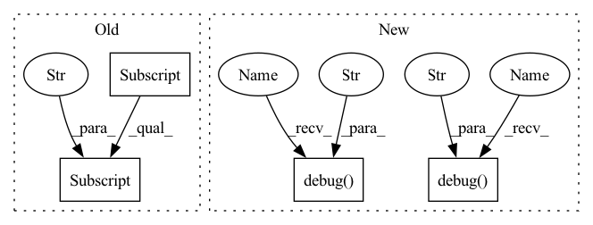

Pattern ID :41630

Before Change
def main(config):
// setup data_loader instances
data_loader = getattr(module_data, config["data_loader"]["type"])(
config["data_loader"]["args"]["data_dir"],
batch_size=512,
shuffle=False,
validation_split=0.0,
After Change
image_id = []
label = []
with torch.no_grad():
logger.debug("testing...")
for i, (data, target) in enumerate(testloader):
data = data.to(device)
output = model(data)
pred = output.max(1, keepdim=True)[1].squeeze()
//
// save sample images, or do something with output here
//
image_id.extend(target)
label.extend(pred.data.cpu().tolist())
output_path = os.path.join(args.output_dir, target)
//// computing loss, metrics on test set
//loss = loss_fn(output, target)
//batch_size = data.shape[0]
//total_loss += loss.item() * batch_size
//for i, metric in enumerate(metric_fns):
// total_metrics[i] += metric(output, target) * batch_size
df = pd.DataFrame({"image_id": image_id, "label": label})
out_csv = os.path.join(args.out_dir, "test_pred.csv")
df.to_csv(out_csv, index=False)
logger.debug("done.")
if __name__ == "__main__":
args = argparse.ArgumentParser(description="testing")
In pattern: SUPERPATTERN
Frequency: 3
Non-data size: 4
Instances
Fragment ID: 116925992
Project Name: deeperlearner/pytorch-template
Commit Name: 49ac2e7c4e18177db31ae741c8dfd7cdbf5ca0f0
Time: 2020-11-11
Author: b04202035@g.ntu.edu.tw
File Name: test.py
M Class Name: AnonimousClass
N Class Name: AnonimousClass
M Method Name: main(1)
N Method Name: main(1)
M Parent Class:
N Parent Class:
M File Name: test.py
N File Name: test.py
M Start Line: 15
M End Line: 62
N Start Line: 20
N End Line: 76
'>
Before Change
def main(config):
// setup data_loader instances
data_loader = getattr(module_data, config["data_loader"]["type"])(
config["data_loader"]["args"]["data_dir"],
batch_size=512,
shuffle=False,
validation_split=0.0,
After Change
def main(args):
config = ConfigParser(args, resume=args.model_path)
logger = config.get_logger("test")
// testset
testset = config.init_obj("dataset", module_data, mode="test")
// dataloader
testloader = config.init_obj("data_loader", module_data, testset)
// build model architecture
model = config.init_obj("model", module_model)
logger.debug(model)
// get function handles of loss and metrics
loss_fn = getattr(module_loss, config["loss"])
metric_fns = [getattr(module_metric, met) for met in config["metrics"]]
logger.debug("Loading model: {} ...".format(config.resume))
checkpoint = torch.load(config.resume)
state_dict = checkpoint["state_dict"]
if config["n_gpu"] > 1:
model = torch.nn.DataParallel(model)
model.load_state_dict(state_dict)
// prepare model for testing
device = torch.device("cuda" if torch.cuda.is_available() else "cpu")
model = model.to(device)
model.eval()
total_loss = 0.0
total_metrics = torch.zeros(len(metric_fns))
image_id = []
label = []
with torch.no_grad():
logger.debug("testing...")
for i, (data, target) in enumerate(testloader):
data = data.to(device)
output = model(data)
pred = output.max(1, keepdim=True)[1].squeeze()
//
// save sample images, or do something with output here
//
image_id.extend(target)
label.extend(pred.data.cpu().tolist())
output_path = os.path.join(args.output_dir, target)
//// computing loss, metrics on test set
//loss = loss_fn(output, target)
//batch_size = data.shape[0]
//total_loss += loss.item() * batch_size
//for i, metric in enumerate(metric_fns):
// total_metrics[i] += metric(output, target) * batch_size
df = pd.DataFrame({"image_id": image_id, "label": label})
out_csv = os.path.join(args.out_dir, "test_pred.csv")
df.to_csv(out_csv, index=False)
logger.debug("done.")
if __name__ == "__main__":
args = argparse.ArgumentParser(description="testing")
'>
Fragment ID: 116926010
Project Name: deeperlearner/pytorch-template
Commit Name: 49ac2e7c4e18177db31ae741c8dfd7cdbf5ca0f0
Time: 2020-11-11
Author: b04202035@g.ntu.edu.tw
File Name: test.py
M Class Name: AnonimousClass
N Class Name: AnonimousClass
M Method Name: main(1)
N Method Name: main(1)
M Parent Class:
N Parent Class:
M File Name: test.py
N File Name: test.py
M Start Line: 15
M End Line: 62
N Start Line: 20
N End Line: 76
'>
Before Change
decoder_input_shape = compute_decoder_input_shape_from_encoder(observation_space, self.encoder_arch)
print(f"Decoder input shape: {decoder_input_shape}")
reversed_architecture = list(reversed(self.encoder_arch))
self.initial_channels = reversed_architecture[0]["out_dim"]
self.initial_shape = int(math.sqrt(decoder_input_shape/self.initial_channels))
print(f"Initial channels: {self.initial_channels}")
print(f"Initial shape: {self.initial_shape}")
self.learn_scale = learn_scale
After Change
logging.debug(f"Decoder input dims: {flattened_input_dim}")
reversed_architecture = list(reversed(self.encoder_arch))
logging.debug(f"Initial channels: {self.full_input_shape[0]}")
logging.debug(f"Initial shape: {self.full_input_shape[1:]}")
self.learn_scale = learn_scale
assert constant_stddev >= 0, f"Standard deviation must be non-negative, you passed in {constant_stddev}"
self.constant_stddev = constant_stddev
self.action_representation_dim = action_representation_dim
'>
Fragment ID: 116925994
Project Name: humancompatibleai/eirli
Commit Name: 30243d58d050474d7d1dd06aa47503e01bbaa62e
Time: 2020-09-17
Author: codywild@berkeley.edu
File Name: src/il_representations/algos/decoders.py
M Class Name: PixelDecoder
N Class Name: PixelDecoder
M Method Name: __init__(9)
N Method Name: __init__(9)
M Parent Class: LossDecoder
N Parent Class: LossDecoder
M File Name: src/il_representations/algos/decoders.py
N File Name: src/il_representations/algos/decoders.py
M Start Line: 220
M End Line: 273
N Start Line: 223
N End Line: 231
'>
Before Change
decoder_input_shape = compute_decoder_input_shape_from_encoder(observation_space, self.encoder_arch)
print(f"Decoder input shape: {decoder_input_shape}")
reversed_architecture = list(reversed(self.encoder_arch))
self.initial_channels = reversed_architecture[0]["out_dim"]
self.initial_shape = int(math.sqrt(decoder_input_shape/self.initial_channels))
print(f"Initial channels: {self.initial_channels}")
print(f"Initial shape: {self.initial_shape}")
self.learn_scale = learn_scale
After Change
logging.debug(f"Decoder input dims: {flattened_input_dim}")
reversed_architecture = list(reversed(self.encoder_arch))
logging.debug(f"Initial channels: {self.full_input_shape[0]}")
logging.debug(f"Initial shape: {self.full_input_shape[1:]}")
self.learn_scale = learn_scale
assert constant_stddev >= 0, f"Standard deviation must be non-negative, you passed in {constant_stddev}"
self.constant_stddev = constant_stddev
self.action_representation_dim = action_representation_dim
'>
Fragment ID: 116926012
Project Name: humancompatibleai/eirli
Commit Name: 41193af1b33bd47b8f230de5a829a218711f9d36
Time: 2020-09-17
Author: codywild@berkeley.edu
File Name: src/il_representations/algos/decoders.py
M Class Name: PixelDecoder
N Class Name: PixelDecoder
M Method Name: __init__(9)
N Method Name: __init__(9)
M Parent Class: LossDecoder
N Parent Class: LossDecoder
M File Name: src/il_representations/algos/decoders.py
N File Name: src/il_representations/algos/decoders.py
M Start Line: 220
M End Line: 273
N Start Line: 223
N End Line: 231